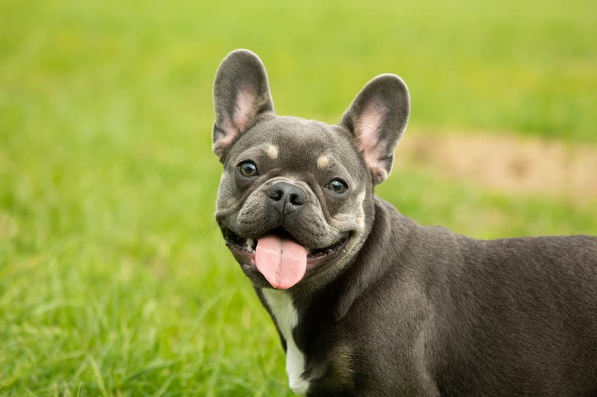
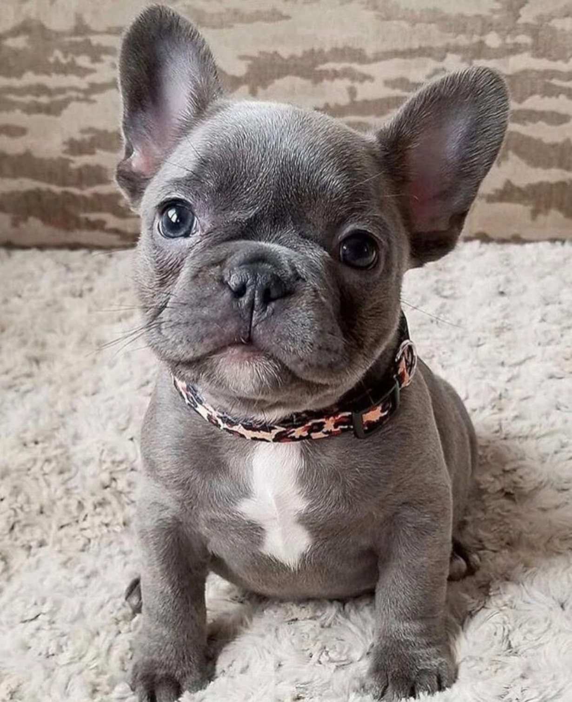
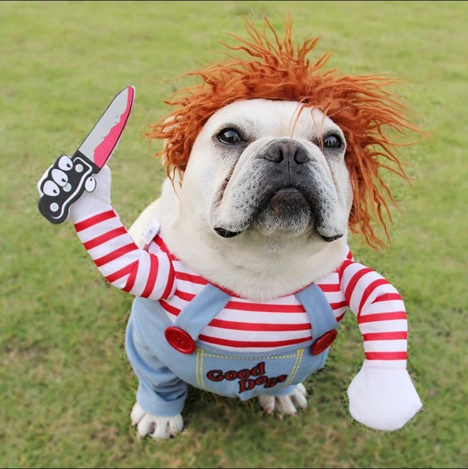
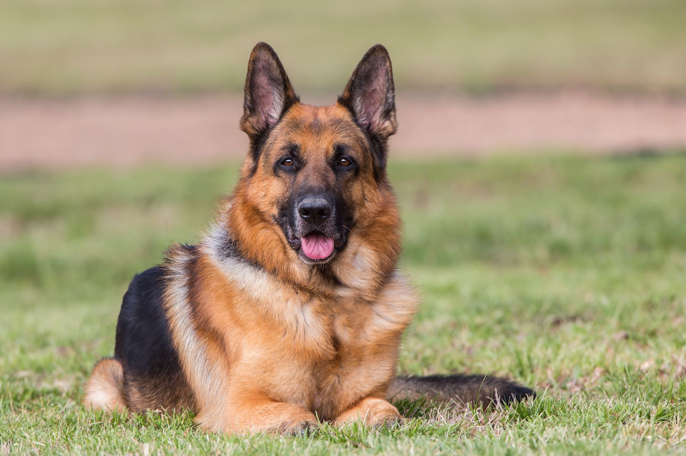
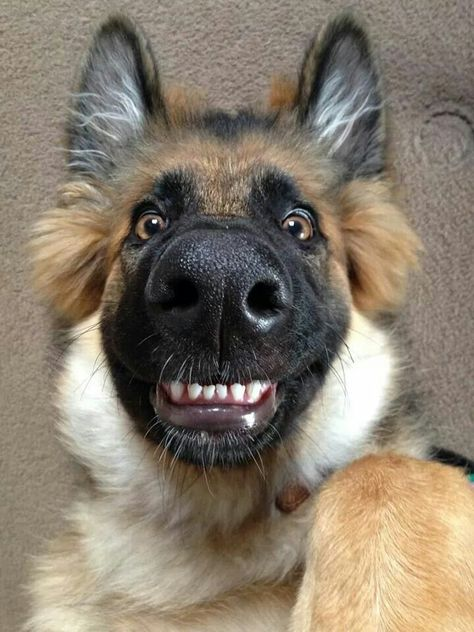

The French Bulldog (French: Bouledogue Français) is a French breed of companion dog or toy dog. It appeared in Paris in the mid-nineteenth century, apparently the result of cross-breeding of Toy Bulldogs imported from England and local Parisian ratters.[3] It is commonly kept as a pet and is among the most frequently registered dogs in a number of countries including Australia, the United Kingdom, and the United States. The breed is susceptible to various health problems as a consequence of being bred for a distinctive appearance, sporting a brachycephalic face and skin wrinkles
History
From the beginning of the nineteenth century, bulldogs
were bred in the United Kingdom for purposes other than traditional
blood sports such as bull-baiting, which were banned in 1835. By the middle of
the century there were miniature bulldogs, most weighing around 7–11 kg (15–24 lb).[4]: 6
Breed clubs and modern recognition
Americans had been importing French Bulldogs for a while, but it was not until 1885 that they were brought over in order to set up an American-based breeding program. They were mostly owned by society ladies, who first displayed them at the Westminster Kennel Club Dog Show in 1896.[8] In the following year, the judge at the dog show, George Raper, only chose winners with "rose ears"—ears that folded at the tip.



Shepherd
The German Shepherd,[a] also known in Britain as an Alsatian, is a German breed of working dog of medium to large size. The breed was developed by Max von Stephanitz using various traditional German herding dogs from 1899.
History
During the 1890s, attempts were being made to standardise dog breeds.[4] Dogs were being bred to preserve traits that assisted in their job of herding sheep and protecting their flocks from predators.[5] In Germany this was practised within local communities, where shepherds selected and bred dogs. It was recognised that the breed had the necessary skills for herding sheep, such as intelligence, speed, strength and keen sense of smell.DescriptionGerman Shepherds are medium to large-sized dogs.[26] The breed standard height at the withers is 60–65 cm (24–26 in) for males, and 55–60 cm (22–24 in) for females. German Shepherds can sprint at speeds of up to 30 miles per hour (48 km/h). The AKC official breed standard does not set a standard weight range.[31] They have a domed forehead, a long square-cut muzzle with strong jaws and a black nose. The eyes are medium-sized and brown. The ears are large and stand erect, open at the front and parallel, but they often are pulled back during movement.

